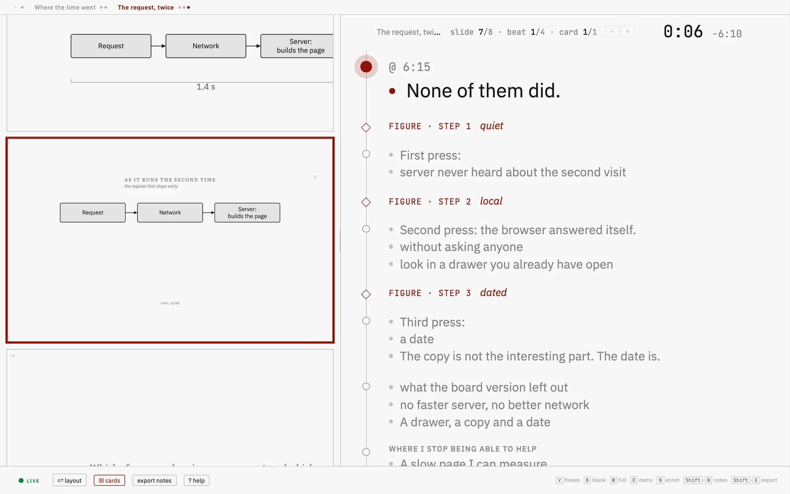
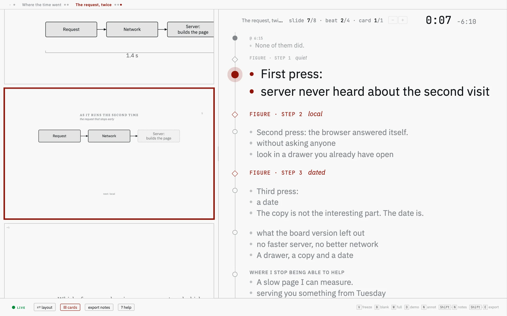
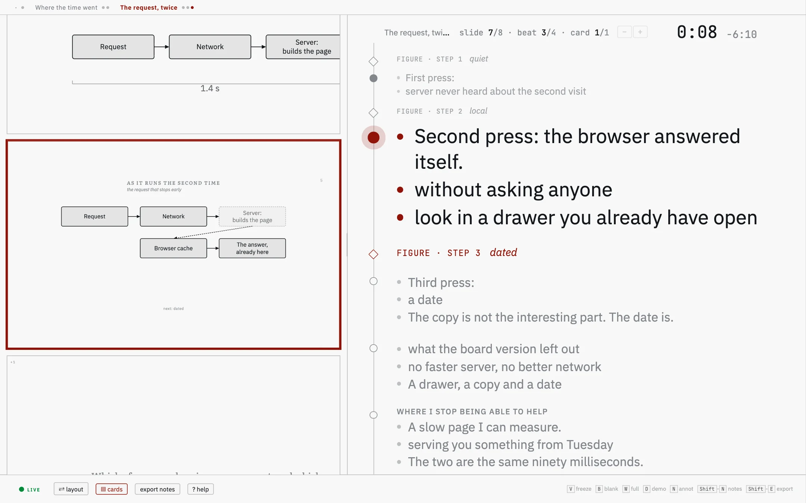
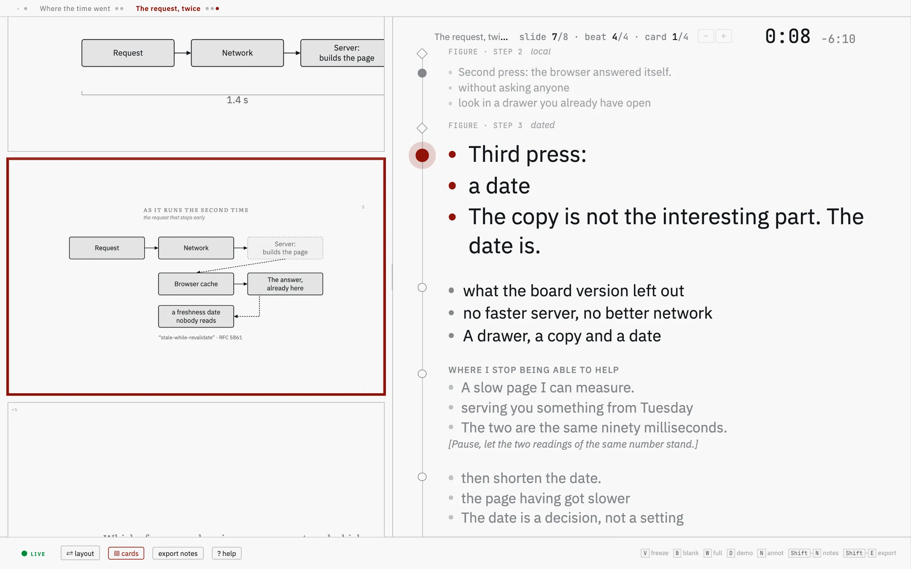
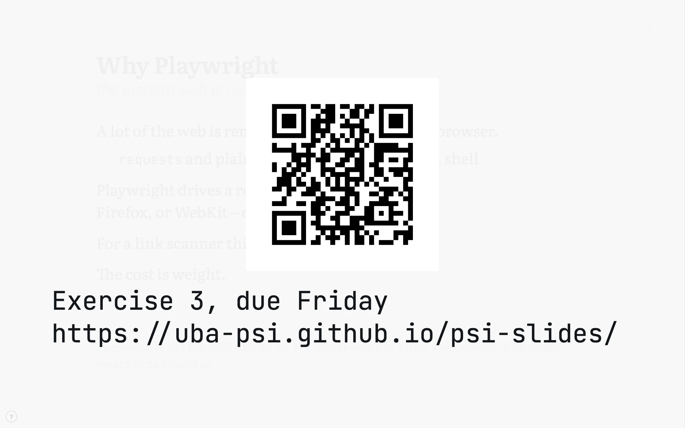

psi-slides · back to the front page · Diese Seite auf Deutsch
In the room
The lecture is running, the room is full, and what is on the wall is the file you built this morning. This is the hour from behind the laptop: what happens, and what you press when it does.
This is not the list of keys. The lecture carries that itself, on ?, grouped by task and with the mouse gestures beside the keys. It is generated from the build, so it is never out of date. What it cannot tell you is which of them you reach for when a room goes quiet, and that is what is written here.
Nothing here needs a server or a network. The two windows find each other in the browser; the timer, your notes, the state of the deck and anything you type stay on the machine you are standing at. A lecture on a memory stick, in a room with no wifi, behaves like this one – up to the single thing on this page that does reach out, a hosted video embed.
Two windows
The projection goes on the wall. You open the cockpit in a second window with S; that one goes on the laptop. What you press in either lands in both.
The two talk over the browser’s own message channel, between the window that opened and the one it opened. No server, no port, no pairing code – and so it works from a file on a stick.

Your note for this slide stands under the mirror of the
projection, at a size you set with the two buttons in its corner. It arrives
filled from the > note: lines in the source;
Shift-N
lets you rewrite it during the talk, for yourself only.
What is coming is the strip along the edge: the next slides, fully revealed, so you can see where one lands before you get there. Drag its edge to make it bigger; drag it to the right edge of the window if you would rather have it as a column.
The clock sits over the corner of the mirror, large enough to read without leaning in. It starts when the window opens, which is ten minutes early whenever you are early, so a click sets it back to zero. It does not pause: a paused clock is one stray click away from being wrong for the rest of the hour.
One press at a time
A lecture moves in steps rather than in slides. Press Space to take the slide one step further; only when nothing is left on this one does the press go on to the next slide. You move by whole slides with the arrow keys, by part of the lecture with Shift and an arrow.
Where the steps come from
A line that is exactly three dashes, on its own, is a step. What comes after it waits until you ask for it, and what the room has already seen stays where it was.
A drawing counts too: a figure written with steps runs them on the same key, and a step inside a column, a card or a row arrives in the order it stands in the file.
## example: The handshake | four messages {.wide #tls}
**It opens with a client hello.** The client
names the versions and the ciphers it can speak.
---
**The server answers with a certificate.** Which is
where the rest of the hour is going to be spent.
> note: Ask who has ever looked at one of these.With C you swap the short slide for the whole text. What the room normally sees is the first sentence of each paragraph plus the phrases you set in bold – the rest of the prose is in the handout. Press it when a question needs the sentence you left out, and press it again to go back. Both windows follow.
On # you decide what happens to a slide that is too big for the frame. Three states, one press after the other: fill the frame, shrink only when the slide would otherwise run off it, or leave it alone at the size you chose. +, - and 0 are the manual version, for the row at the back.
The other cockpit, for a talk you have written out
A talk written word for word, with almost nothing on the slides, is given differently from a lecture, and K rearranges the window for it: the projection small in a strip on the left, your notes as cards down a rail on the right. It is a mode you switch into and stay in rather than a panel you open, and it changes what Space does.
You go card by card, and only when the cards of this step are
used up does the press click the projector. Below are four presses of one
slide, one frame each. That slide carries a drawing with steps of its own, and
three of its cards name the press they belong to, with
> note: from 1, from 2 and from 3:
a drawing’s steps have no three-dash line between them for a note to
stand after.
as the slide arrives

The card being said stands large. Below it, in grey, the cards still to come; between them the diamonds, one per click of the projector.
one press

The card above has gone grey, the press has reached the projector, and a box on the drawing has faded out.
two

The next card, and the two boxes it is about have arrived on the drawing. One press moved both.
three

The last of the cards pinned to a step. What has been said stands above the cursor, what is left stands below it.
A paragraph in a note is a card, and its bold phrases are its
bullets. Bold the words you want to see, not the ones you want to
stress. A paragraph with no bold shows whole, in smaller type, and a
#### heading above one gives the card a title.
Where the note stands is when it is said. A note written above the first three-dash line belongs to the step the slide opens on, a note under it to the step that line opens. Nothing has to be pinned by hand, and a lecture written before this existed shows its notes on the first step, as it did before.
@12:30 at the start of a card is when you
meant to reach it. The cockpit then shows beside the clock how far off that
is, rounded to ten seconds and red when you are behind. A deck with no such
marks shows nothing there, so the mark stays out of your way until you want
it.
A question about slide forty
Somebody asks about something you said half an hour ago. Two ways back to it, both over the projection itself, and both of them leave you where you were when you press Esc.
With O you lay the whole lecture out as a board, in both windows at once, so the room searches with you rather than watching you scroll. The search on / stays in the cockpit until you pick a hit.


When the slide is not the point
Half of presenting is taking attention off the wall and putting it back. Three keys and one mouse gesture do that, and none of them changes where you are in the lecture.
Freeze the projection with V. The wall keeps the slide it has while you go looking somewhere else – three slides ahead, into a detail you folded away, wherever the answer is. Press it again and the room comes to where you are now, in one step.
The state is the button: the cockpit’s footer says live or frozen and clicking it does the same thing as the key.
You blank the projection with B. The wall goes dark and the room looks at you instead. It works while the projection is frozen too: it is an order to the projector rather than something the two windows have to agree on.
The laser has no key. Move the mouse over the mirror in the cockpit and a dot appears in the same place on the wall – you point at the slide on your own screen, at the size it is on yours, and the room sees where.
For a live demo on the projection, press D. Pick a window or a screen of your machine and it fills the frame until you press D again – so the terminal you are typing in can be on the wall without mirroring your displays and losing your window positions on the way back.
On a Mac the first capture fails while macOS is still asking for the screen-recording permission, and a second press of D then works. Worth doing once before the talk rather than finding out in front of the room.

Writing on the slide
Press N and a box fills the frame; what you type is the slide while you type it. One word stands large and centred, several lines as a block, ASCII art keeps its columns.
Type an address into it and a QR code appears above the words, drawn in the page: the room can take the link with a phone instead of copying it down.
A link in a lecture does not open a page. It puts the address on both screens with its own QR code, drawn when the lecture was built, and you go on. Nothing loads, and the tab you had open with your mail in it stays where it was.
A video plays in the frame, from the file itself, with the two windows kept in step on play, pause and position. A YouTube or Vimeo embed is the one thing that has to reach a third party, and it needs the lecture served rather than opened as a file.
What you wrote in the room goes back into the source
The notes you typed on the wall are drafts, kept in the browser per lecture. They are worth keeping: what a room made you write down is usually what the slide was missing.
Two steps, after the hour
Press Shift-E in the cockpit and every note you typed on the wall goes to the clipboard as one marked block; the cockpit then asks before clearing the drafts. Say no and they stay, so a blocked clipboard never costs you the text.
Paste the block at the end of source.md and run
the build once. Each note moves under the slide it was written on and the
marker goes; anything it could not place is left at the end for you.
# what Shift-E puts on the clipboard, pasted at the end of source.md
<!-- annotations:start -->
### why-playwright
> annot: The ninety-second demo lands better than the paragraph.
### async-await
> annot: Ask who has hit this in a real script.
<!-- annotations:end -->
# then, once
node build.js lectures/my-lecture/source.md --integrate-annotationsWhere to read further
- What psi-slides is The front page: one lecture as the room sees it and as the reader gets it, and why those are the same file.
- Getting started The app and the command line, and how to build the tutorial from a machine with nothing installed on it.
- The tutorial lecture A lecture about writing lectures. Open it, press S, and the keys on this page are under your hands.
- Figures you write The case for the figure language, and the manual beside it, which builds one a line at a time and lists every statement.